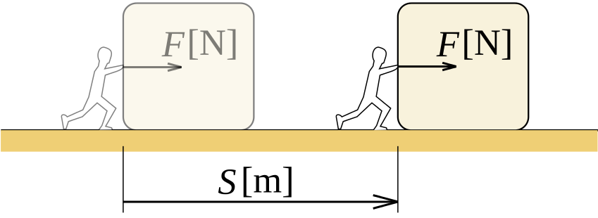
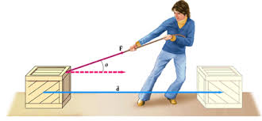
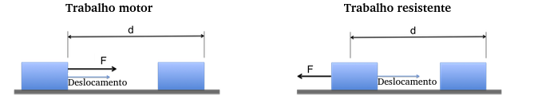
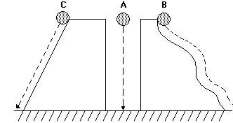
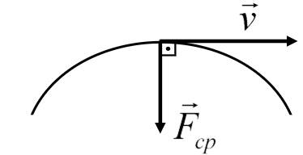
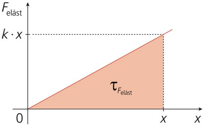

Aula2-19: Trabalho
Sempre que uma força atua sobre um corpo que se desloca, ela pode transferir energia para ele ou retirar energia dele. Chamamos de trabalho essa energia transferida pela força ao longo de um deslocamento.

Da definição, concluímos que o trabalho é proporcional a dois fatores: ao deslocamento do corpo na direção da força (quanto maior esse deslocamento, mais energia é transferida) e à intensidade da força aplicada (quanto maior a força, maior a energia transferida). Quando a força atua na mesma direção e no mesmo sentido do deslocamento, podemos escrever:
$${ W = F . d }$$
Na figura acima, a força é aplicada na mesma direção do movimento: por isso, a fórmula anterior já pode ser usada diretamente. No entanto, pode haver situações (veja a figura abaixo) em que a força aplicada não é paralela ao deslocamento do corpo. Nesses casos, decompomos a força e usamos na fórmula apenas a componente que tem a direção do deslocamento. Fazendo isso, obtemos a seguinte expressão:
$${ W = F . d . cos(\theta) }$$

⚛ CLASSIFICAÇÃO:
Quando a força aplicada tem uma componente no mesmo sentido do deslocamento, o ângulo θ entre a força e o deslocamento é menor que 90°: o cosseno é positivo, o trabalho é positivo e o chamamos de trabalho motor, pois a força favorece o movimento e fornece energia ao corpo (como o seu empurrão ao fazer um carrinho andar para a frente). Quando a componente da força aponta em sentido contrário ao deslocamento, o ângulo θ fica entre 90° e 180°: o cosseno é negativo, o trabalho é negativo e o chamamos de trabalho resistente, pois a força se opõe ao movimento e retira energia do corpo (como o atrito, que freia o carrinho).

Trabalho da força peso
|
 |
No dia a dia, a força peso é vertical e aponta para baixo. Assim, quando o corpo se desloca horizontalmente, o peso é perpendicular ao deslocamento e o seu trabalho é nulo — andar sobre um piso plano é um bom exemplo. Quando há deslocamento vertical, o peso realiza trabalho: ele é motor na descida e resistente na subida. Nesse caso, o trabalho da força peso não depende do caminho percorrido, mas apenas da diferença de altura entre as posições inicial e final. |
Trabalho da força resultante centrípeta
|
 |
O trabalho da força centrípeta é sempre nulo! Em cada instante, essa força aponta para o centro da trajetória, ou seja, na direção perpendicular à velocidade (e ao deslocamento) do corpo. Como uma força perpendicular ao deslocamento não realiza trabalho (cos 90° = 0), a força centrípeta apenas muda a direção do movimento, sem alterar o módulo da velocidade — por isso ela não transfere energia ao corpo. |
Trabalho da força resultante elástica
|
 |
Se representarmos em um gráfico a intensidade da força elástica em função da deformação x da mola, a área sob a curva será numericamente igual ao trabalho realizado nessa deformação. No gráfico acima, essa área tem a forma de um triângulo retângulo, e a área de um triângulo retângulo é a metade do produto dos catetos. Como a base desse triângulo vale x (a deformação) e a altura vale k.x (a intensidade da força), obtemos o trabalho da força elástica: |